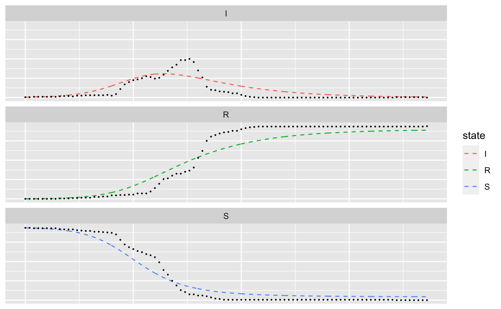
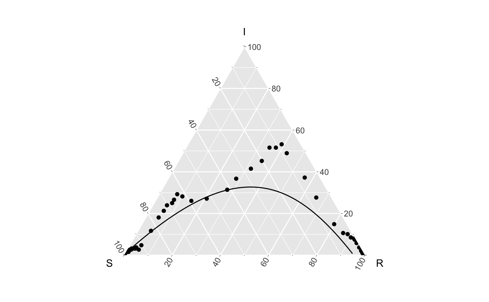

Hagelloch Measles – Fitting the deterministic, continuous time SIR model
Source:vignettes/not-built-vignettes/hagelloch-sir-fit.Rmd
hagelloch-sir-fit.RmdOverview
In this series of vignettes, we will demonstrate epidemic analysis pipeline from EDA to dissemination using a case study of measles.

Hagelloch series vignettes
Hagelloch 1 Pre-processing and EDA
Hagelloch 2.1 Modeling and Simulation: the SIR model
Hagelloch 2.2 Modeling and Simulation: fitting a SIR model
Hagelloch 2.3.1 Modeling and Simulation: a stochastic SIR model
Hagelloch 2.3.2 Modeling and Simulation: a stochastic SIR model
Goals in this vignette
Fit the deterministic, continous time SIR model described in the previous vignette to the Hagelloch pre-processed data in this vignette
Visualize the fit with
EpiCompare
Fitting the model
Getting the pre-processed data and SIR model
After loading the libraries,
library(tidyverse) library(EpiCompare) library(knitr) library(kableExtra) library(RColorBrewer) library(deSolve)
we get the aggregate SIR data from hagelloch_raw and define our deterministic, continuous time SIR model.
## Getting aggregate data aggregate_hag <- hagelloch_raw %>% agents_to_aggregate(states = c(tI, tR)) %>% rename(time = t, S = X0, I = X1, R = X2) ## Making the SIR function library(deSolve) sirmod = function(t, y, parms) { # Pull state variables from y vector S = y[1] I = y[2] R = y[3] # Pull parameter values from parms vector beta = parms["beta"] gamma = parms["gamma"] N = S + I + R # Define equations dS = - beta * S * I/N dI = beta * S * I/N - gamma * I dR = gamma * I res = c(dS, dI, dR) # Return list of gradients list(res) }
Making an objective function to minimize
We will find the best fit deterministic, continuous time SIR model by minimizing the sum of squared error over the observed data and the estimates. That it is, we will find
\[
\left ( \hat{\beta}, \hat{\gamma}\right ) = \arg \min_{\beta, \gamma} \sum_{t=0}^T (S(t) - s(t))^2 + (I(t) - i(t))^2 + (R(t) -r(t))^2,
\] where \(S(t), I(t),\) and \(R(t)\) are estimates produced from our model and \(s(t), i(t), r(t)\) are observed data. We make a wrapper for the sum of squares, called SSE_sir()
SSE_sir <- function(parms, observed_data){ ## Estimate model inits <- as.numeric(observed_data[1, c("S", "I", "R")]) times <- seq(min(observed_data$time), max(observed_data$time), by = .1) sir <- as.data.frame(ode(y = inits, times = times, func = sirmod, parms = parms)) colnames(sir) <- c("time", "S_hat", "I_hat", "R_hat") sir_sub <- sir %>% filter(sir$time %% 1 == 0) SSE <- sum((sir_sub[,-1] - observed_data[, -1])^2) return(SSE) }
Finally, we optimize to find the best \(\beta\) and \(\gamma\) estimates. As an initial guess for \(\gamma\) we use 1/8, which is assuming an average days of 8 days until recovery. For \(\beta\), we guess that \(\beta / \gamma = R_0 = 6\) and so \(\beta = .75\).
init_par <- c("beta" = .75, "gamma" = 1/8) best_params <- optim(init_par, fn = SSE_sir, observed_data = aggregate_hag) print(best_params$par)
## beta gamma
## 0.27703209 0.08626326We can plot the observed data over our estimated curves.
inits <- as.numeric(aggregate_hag[1, c("S", "I", "R")]) times <- seq(min(aggregate_hag$time), max(aggregate_hag$time), by = .1) sir <- as.data.frame(ode(y = inits, times = times, func = sirmod, parms = best_params$par)) colnames(sir) <- c("time", "S", "I", "R") tidy_ests <- sir %>% mutate(type = "est") %>% pivot_longer(-c(time, type), names_to = "state") tidy_data <- aggregate_hag %>% mutate(type = "obs") %>% pivot_longer(-c(time, type), names_to = "state") combined_df <- bind_rows(tidy_ests, tidy_data) ggplot() + geom_line(data = combined_df %>% filter(type == "est"), aes( x= time, y = value, group = state, col = state), linetype = "dashed") + geom_point(data = combined_df %>% filter(type == "obs"), aes( x= time, y = value, group = state), size = .2) + facet_wrap(~state, ncol = 1)

And with a ternary plot
ggplot() + geom_line(data = sir, aes(x = S, y = I, z = R)) + geom_point(data = aggregate_hag, aes(x = S, y = I, z = R)) + coord_tern()

It is pretty clear from the intraocular exam (the eye-test) that the best fit deterministic continuous time SIR model does not capture the features of the data well. However, we do not look at any potential prediction intervals or confidence bands with this model, which may change our view. In the next vignette, we will introduce a stochastic, discrete time SIR model.